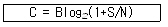
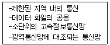

사무자동화산업기사 (2003-05-25 기출문제)
1과목: 사무자동화 시스템
1. 인간의 지적능력을 컴퓨터에서 실현하려는 기술인 것은?
- AI
- PSDN
- LAN
- ISDN
(정답률: 77%)

2. 사무자동화의 배경요인 및 필요성이 아닌 것은 ?
- 고생산성과 고설비 투자
- 문서 작성비 및 보관비 상승
- 컴퓨터 기술과 통신기술의 발전
- 고학력 노동자의 증가와 사무관리의 질적인 효율성 필요
(정답률: 74%)
3. 사무자동화와 관련된 요소로서 알맞지 않는 것은 ?
- 컴퓨터 기술
- 시스템 과학 및 행동과학
- 통신기술
- 명확한 구조의 사무업무
(정답률: 71%)
4. Accumulator(누산기)의 설명으로 가장 적합한 것은 ?
- 자료를 이동시키거나 자료의 입, 출력을 제어하는 레지스터
- 연산 명령의 순서를 기억하고 있는 주기억장치의 레지스터
- 산술 및 논리연산의 결과를 일시적으로 기억하는 레지스터
- 명령어 처리에 필요한 실제 데이터가 들어있는 기억장소를 구하는 레지스터
(정답률: 83%)
5. 그룹웨어(Groupware)의 특징으로서 적당하지 않은 것은?
- 통신망(LAN)에 구현된다.
- 구성원들 간에 정보를 주고받으면서 생산성을 높이는데 주안점을 둔다.
- 정보를 공유하여 신속한 결정을 내릴 수 있도록 지원한다.
- 기업과 소비자 간의 서비스 교환에 중점을 둔다.
(정답률: 79%)
6. 윈도우 환경에서 인터넷에 접속하는 방법으로 옳지 않은 것은?
- 전화 접속 네트워킹을 이용한 방법
- 네트워크 어댑터를 이용한 방법
- ISDN(Integrated Services Digital Network)을 이용한 방법
- 웹 브라우저를 이용한 방법
(정답률: 51%)
7. VDT 증후군에 해당되지 않는 것은 ?
- 습도건조, 호흡저하(호흡계 질환)
- 시력저하. 막건조 백내장(안과계 질환)
- 두통, 스트레스(정신계 질환)
- 손목, 어깨, 허리 저림(신경, 관절계 질환)
(정답률: 75%)
8. 영상자료를 컴퓨터내의 자료표현 방식으로 바꾸어 주는 입력장치는 ?
- 마우스
- 키보드
- 스캐너
- 모니터
(정답률: 70%)
9. 사무업무의 자동화라는 관점에서 사무자동화시스템을 구현하고자 할 경우, 이의 성공적인 실현을 위한 기준으로 적절하지 않은 것은?
- 효율성
- 기능성
- 충분성
- 용이성
(정답률: 67%)
10. 다음 중 사용자가 원하는 프로그램을 한번 기억시키면 지울 수 없는 기억소자는 ?
- PROM
- EEPROM
- EPROM
- DRAM
(정답률: 55%)
11. 일괄처리(Batch processing)에 가장 적절한 업무는 ?
- 항공기 예약 업무
- 수도요금 계산업무
- 증권매매 업무
- 공장 자동제어 업무
(정답률: 83%)
12. 자기 테이프의 레코드 크기가 70자이고, 블록 크기가 2800자인 경우 블록화 인수는 얼마인가 ?
- 35
- 40
- 45
- 50
(정답률: 80%)
13. 의사결정에 필요한 정보를 데이터베이스로부터 검색하여 필요한 분석을 행하고 보기 쉬운 형태로 편집, 출력해 주는 시스템을 무엇이라 하는가?
- 사무자동화시스템
- 그룹웨어시스템
- 전자출판시스템(DTP)
- 의사결정지원시스템(DSS)
(정답률: 77%)
14. 캐시메모리(Cache Memory)의 설명으로 가장 올바른 것은?
- 자주 참조되는 데이터나 프로그램을 기억한다.
- 많은 데이터를 주기억장치에 한 번에 가져온다.
- 보조기억장치의 용량에 해당하는 기억장소를 가진 것처럼 큰 프로그램을 작성할 수 있도록 한다.
- CPU내에서 계산을 위해서 임시로 데이터를 저장한다.
(정답률: 35%)
15. 사무자동화 추진시 요구분석의 내용을 설명한 것으로 적절하지 않은 것은 ?
- 자동화기기의 기능과 특성에 관한 요구분석
- 사무자동화 추진목표 설정에 관한 분석
- 사용자의 인적 요소에 관한 특성의 분석
- 기기 도입 후 관리 및 사용 효율화에 관한 분석
(정답률: 21%)
16. 전자상거래에 이용될 전자화폐의 특성에 관한 사항으로 적절하지 못한 것은 ?
- 전자화폐의 보안성은 물리적인 존재에 의존하면 아니된다.
- 전자화폐 사용에서 사적인 비밀이 보장되어야 한다.
- 화폐이기 때문에 다른 사람에게 이전이나 양도가 불가능하여야 한다.
- 보다 작은 액수로 나눌 수 있어야 한다.
(정답률: 69%)
17. 다음 중 그룹웨어의 구성요소와 거리가 먼 것은?
- 서버 요소
- 네트워크 요소
- 클라이언트 요소
- 메인프레임 요소
(정답률: 72%)
18. 신체장애를 유발하는 사무환경과 관계가 없는 것은 ?
- 온도, 소음, 시각환경 등의 작업환경
- 작업공간 및 작업의 난이도
- 사무자동화기기의 조작성 및 작업시간
- 사무자동화기기간의 비호환성
(정답률: 88%)
19. 사무자동화(OA)의 기본요소에 해당되지 않는 것은?
- 사람
- 제도
- 장비
- 지형
(정답률: 90%)
20. 사무자동화를 통한 개선 목표로 바람직하지 않은 것은 ?
- 개선의 목표로 분산처리에서 집중처리로 이행되어야함
- 서류의 감소화와 삭감
- 업무처리 및 서류의 표준화 메뉴얼화
- 개개인의 업무처리 과정의 간소화
(정답률: 65%)
2과목: 사무경영관리 개론
21. 자료관리가 필요한 이유로 적합하지 않은 것은 ?
- 자료의 자연증가를 통제할 수 있다.
- 자료의 이동 과정을 신속하게 파악할 수 있다.
- 자료처리에 따르는 경비를 절약할 수 있다.
- 자료를 서식화 할 수 있다.
(정답률: 43%)
22. 다음 중 워크샘플링(Work sampling)법에 관한 설명은?
- 사이클이 짧고 반복 작업에 적합하다.
- 책상에서 비용을 전부 측정할 수 있다.
- 임의의 시간 간격으로 관측하여 시간적 구성 비율을 통계적으로 추축하는 방법이다.
- 과거의 실적에 준하여 기억을 더듬으며 업무마다 시간치를 측정하는 방법이다.
(정답률: 78%)
23. 조직의 일반원칙으로 적절치 못한 것은 ?
- 조직원은 한사람의 상사에게 명령을 받아야 한다.
- 구성원은 전문화된 활동분야만을 담당하는 것이 바람직하다.
- 각 계층에 할당된 책임을 명확히 하기위해 권한을 위임한다.
- 원활한 의사소통을 위해 조직계층을 적절하게 확충하여야 한다.
(정답률: 28%)
24. 다음 중 정보관리의 기능 구조로 보기 힘든 것은?
- 정보계획
- 정보통제
- 정보처리
- 정보수집
(정답률: 41%)
25. 다음 중에서 사무작업 계획화시 필요한 조건이 아닌 것은?
- 작업의 대상
- 작업인의 능력
- 작업의 활동
- 작업의 순서
(정답률: 25%)
26. 현대 사무관리의 추세가 아닌 것은?
- 사무관리의 표준화
- 사무관리의 통제화
- 사무관리의 간소화
- 사무관리의 전문화
(정답률: 68%)
27. 사무통제를 위한 관리기술 중 사무표준을 사용하여 매일의 사무를 능률적으로 처리하는 것을 목적으로 하는 관리활동은 ?
- 사무품질관리
- 사무공정관리
- 사무외주관리
- 사무원가관리
(정답률: 64%)
28. 자료의 적합성에 대한 평가방법으로 옳지 않은 것은 ?
- 유용성
- 신뢰성
- 자료수집시간
- 보안성
(정답률: 37%)
29. 사무작업을 계획화해야 할 대상에 대한 설명으로 바르지 못한 것은?
- 비반복적인 것도 어느정도 계획화하는 것이 좋다.
- 어떤 업무이든 반드시 계획화를 하여야 한다.
- 관례적인 업무도 계획화할 필요가 있다.
- 반복적인 업무는 반드시 계획화할 필요가 있다.
(정답률: 61%)
30. 전자문서를 작성한 작성자의 신원과 당해 전자문서가 그 작성자에 의하여 작성되었음을 나타내는 전자적 형태의 서명을 무엇이라고 하는가?
- 인증서
- 전자정보
- 전자서명
- 전자결재
(정답률: 79%)
31. EDI를 구성하고 있는 기본요소와 거리가 먼 것은 ?
- 하드웨어
- 네트워크
- EDI 소프트웨어
- 데이터베이스
(정답률: 57%)
32. 자료관리를 자동화하였을 경우에 얻을 수 있는 효과에 해당되지 않는 것은 ?
- 정보처리 량의 증가로 인한 복잡한 행정사무를 보다 신속, 정확하게 처리할 수 있다.
- 통일된 서식을 사용함으로써 사용상의 불편함을 해소할 수 있다.
- 시간은 많이 소요되지만 업무개발에 깊이 몰두할 수 있다.
- 보존문서 등을 마이크로필름이나 광디스크에 보관함으로써 많은 공간을 절약할 수 있다.
(정답률: 84%)
33. 사무실 사무환경의 배치를 설명한 것이다. 이 중 가장 적절하게 설명한 것은?
- 광선은 우측 어깨로 부터 받을 수 있도록 배치한다.
- 관리자, 감독자는 가능한 부하직원의 전면에 위치시키도록 한다.
- 방문객의 접촉의 기회가 많은 부서는 입구와 거리가 먼 자리에 배치한다.
- 캐비넷등 작업자가 빈번히 사용하는 사무용구나 비품은 가능한한 집무자 곁에 배치한다.
(정답률: 81%)
34. 다음 중 사무는 경영의 정보를 행동으로 연결시키는 과정이다. 라고 주장한 사람은?
- 포레스터(J.W. Forrester)
- 달링톤(G.M. Darlington)
- 힉스(C.H. Hicks)
- 딕시(L.R. Dicksee)
(정답률: 65%)
35. 다음 중 사무의 본질은 무엇인가?
- 작업
- 계획
- 통제
- 지휘
(정답률: 65%)
36. 사무의 성격에 대한 설명으로 적합하지 않은 것은?
- 가정의 세금을 계산하는 것도 일종의 사무이다.
- 사무는 조직체를 전제로 한다.
- 사무는 조직의 경영업무를 위한 수단이다.
- 사무는 표준화된 절차를 따르는 것이 바람직하다.
(정답률: 73%)
37. 프로그램의 권리에 대한 설명으로 적합하지 않은 것은 ?
- 프로그램 저작자란 프로그램을 창작한 자를 말한다.
- 프로그램 저작권은 프로그램이 창작된 때로부터 발생한다.
- 프로그램 저작권은 영구적이다.
- 프로그램 저작자는 그 프로그램의 공표권을 가진다.
(정답률: 75%)
38. 기업간 또는 공공기관 사이에 교환되는 문서로 작성된 거래정보를 컴퓨터간의 전자적 수단으로 표준화된 형태와 코드체계를 이용하여 교환하는 시스템은?
- EDPS
- MIS
- EDI
- OA
(정답률: 70%)
39. 사무소의 위치를 선정하는데 고려해야 할 사항으로 적합하지 않은 것은?
- 회사인 경우 거래처 등과의 연락의 편의를 고려해야 한다.
- 여러 가지 서비스 기관의 이용편의를 고려해야 한다.
- 사무소 주변의 보건 위생적 환경이 양호해야 한다.
- 행정기관의 경우 각종 세제를 검토하여 유리한 곳을 정해야 한다.
(정답률: 71%)
40. 다음 중 우리나라의 일반자료 분류방법은?
- 한국 이진분류법
- 한국 팔진분류법
- 한국 십진분류법
- 한국 십육진분류법
(정답률: 75%)
3과목: 프로그래밍 일반
41. 단항연산자(unary) 연산에 해당하는 것은?
- AND
- OR
- Complement
- XOR
(정답률: 82%)
42. 절대로더에서 기능과 그 행위 주체의 연결이 옳지 않은 것은?
- 할당- 프로그래머
- 연결- 로더
- 재배치-어셈블러
- 적재-로더
(정답률: 64%)
43. 기계어와 가장 유사한 언어는?
- Cobol
- Assembly
- C
- Basic
(정답률: 71%)
44. 객체의 외부적인 활동을 연산이라는 전제하에서 구현한 것은?
- 속성
- 메시지
- 메소드
- 추상화
(정답률: 71%)
45. 구문 분석에는 하향식 파싱(Top-down parsing)과 상향식 파싱(Bottom-up parsing)이 있다. 하향식 파싱에 대한 설명으로 옳지 않은 것은?
- 하향식 구문분석은 입력 문자열에 대한 좌측 유도(left most derivation) 과정으로 볼 수 있다.
- 파싱할 수 있는 문법에 left recursion 이 없어야 하고 left factoring 을 해야 하므로 상향식 파서보다는 일반적이지 못하다.
- 루트로부터 preorder 순으로 주어진 문자열에 대해 파스 트리를 구성한다.
- 터미널 노드에서 뿌리 노드를 만들어 내는 과정으로 뿌리 노드, 즉 시작 기호가 만들어지면 올바른 문장이고 그렇지 않으면 틀린 문장이다.
(정답률: 58%)
46. C 언어에서 사용하는 기억클래스에 해당하지 않는 것은?
- auto
- static
- register
- scope
(정답률: 73%)
47. 수학적 수식 "A+B"를 "+AB"로 표현한 표기법은?
- PREFIX
- INFIX
- SUFFIX
- POSTFIX
(정답률: 72%)
48. 운영체제의 목적으로 거리가 먼 것은?
- 응답시간(turnaround time) 증가
- 신뢰성(reliability) 향상
- 처리능력(throughput) 향상
- 사용의 용이성(availability) 향상
(정답률: 80%)
49. 원시 프로그램을 하나의 긴 스트링으로 보고 원시 프로그램을 문자 단위로 스캔하여 문법적으로 의미 있는 일련의 문자들로 분할해 내는 역할을 하는 것은?
- 구문분석기
- 어휘분석기
- 파스트리
- 코드생성기
(정답률: 59%)
50. 정적 바인딩에 해당하지 않는 것은?
- 실행시간
- 번역시간
- 언어구현 시간
- 언어정의 시간
(정답률: 65%)
51. C 언어의 관계 연산자에 해당하지 않는 것은?
- <
- <>
- ==
- !=
(정답률: 42%)
52. C 언어에서 데이터 형식을 규정하는 서술자로서 의미가 옳지 않은 것은?
- %d : 8진정수(Octal integer)
- %c : 문자(character)
- %s : 문자열(string)
- %x : 16진정수(hexadecimal)
(정답률: 63%)
53. 시스템 프로그래밍 언어로서 가장 적당한 것은?
- C
- COBOL
- PASCAL
- FORTRAN
(정답률: 90%)
54. 프로그램 언어의 실행 과정으로 옳은 것은?
- 로더 - 링커 - 컴파일러
- 컴파일러 - 로더 - 링커
- 링커 - 컴파일러 - 로더
- 컴파일러 - 링커 - 로더
(정답률: 78%)
55. 10진수 634를 BCD 코드로 표현한 것은?
- 011000110100
- 001100110100
- 011000110011
- 001100110011
(정답률: 55%)
56. 스트림 자료 활용의 예가 빈번한 언어는?
- COBOL
- SNOBOL 4
- C
- ADA
(정답률: 61%)
57. 구조적 프로그램의 기본 구조가 아닌 것은?
- 순차(sequence) 구조
- 조건(condition) 구조
- 일괄(batch) 구조
- 반복(repetition) 구조
(정답률: 63%)
58. 운영체제를 기능상 분류했을 때, 처리(processing) 프로그램에 해당하지 않는 것은?
- language translator program
- service program
- problem program
- supervisor program
(정답률: 58%)
59. BNF 심볼에서 정의를 나타내는 기호는?
- ㅣ
- ::=
- < >
- ==
(정답률: 88%)
60. 부프로그램(subprogram)과 매크로(macro)에 관한 설명으로 거리가 먼 것은?
- 부프로그램을 사용하면 수행속도가 상대적으로 느리다.
- 매크로를 사용하면 일반적으로 프로그램의 크기가 커진다.
- 부프로그램을 사용하면 프로그램의 크기를 상대적으로 줄일 수 있다.
- 매크로를 사용하면 전체적인 프로그램을 모듈러 하게 구성할 수 있다.
(정답률: 32%)
4과목: 정보통신 개론
61. ITU-T의 표준 시리즈 중에서 전화망을 통한 데이터 전송을 규정한 것은?
- A 시리즈
- O 시리즈
- V 시리즈
- X 시리즈
(정답률: 58%)
62. 다음 ISDN 서비스 중 실제로 단말을 조작하고 통신하는 이용자 측에서 본 서비스는?
- 텔리 서비스
- 베어러 서비스
- 부가 서비스
- D채널 비접속 서비스
(정답률: 38%)
63. 통신 프로토콜(Protocol)의 설명 중 가장 합당한 것은?
- 회선이 접속되어 있는 단말장치를 중앙의 컴퓨터가 제어하기 위한 프로그램
- 데이터의 오류나 정정을 검출하기 위한 에러제어 방식
- 컴퓨터 간 또는 단말기 간 에러 없이 효율적인 정보를 주고받기 위해 설정한 통신규칙
- 데이터의 동기방식을 결정하기 위한 데이터구성 모델
(정답률: 77%)
64. 다음 식은 잡음이 있는 통신채널의 경우 통신용량을 계산하는 식이다. 기호가 바르게 표현된 것은?

- C : 신호 전력
- B : 주파수 대역폭
- S : 잡음 전력
- N : 통신용량
(정답률: 59%)
65. 다음의 설명 내용에 해당되는 것은?

- VAN
- ISDN
- LAN
- PSTN
(정답률: 71%)
66. 다음 중 광섬유 케이블의 장점이 아닌 것은?
- 고속 대용량 전송이 가능하다.
- 가볍고 부식되지 않으므로 분기나 접속이 용이하다.
- 장거리 전송이 가능하다.
- 가볍고 내구성이 강하다.
(정답률: 62%)
67. 데이터의 충돌을 막기 위해 송신 데이터가 없을 때에만 데이터를 송신하고, 다른 장비가 송신중일 때에는 송신을 중단하며 일정시간 간격을 두고 대기하였다가 다시 송신하는 방식을 무엇이라 하는가?
- 토큰 순회버스
- 토큰 순회 링
- CSMA/CD
- CSMA/CA
(정답률: 68%)
68. 한 통신로를 이용하여 송신과 수신 중 한 가지 기능만으로 사용하되, 송수신 기능을 번갈아 사용하므로써 상호정보를 교환하는 방법은?
- 단방향(simplex) 통신
- 반단방향(half simplex) 통신
- 전이중방향(full duplex) 통신
- 반이중방향(half duplex) 통신
(정답률: 72%)
69. 디지털 변조 방식 중에서 전송속도를 높이기 위하여 위상과 진폭을 함께 변화시켜서 변조하는 방식은?
- ASK
- PSK
- FSK
- QAM
(정답률: 71%)
70. 뉴미디어인 CATV에 대한 설명으로서 옳지 않은 것은?
- 일반 지상파 TV 방송과 칼라색상 구조 및 주사방식이 서로 다르다.
- 다채널로서 방송뿐만 아니라 정보통신서비스가 가능하다.
- 원래 난시청 해소를 목적으로 설치했던 지역 공동 안테나 TV 방식이다.
- 전송로는 동축케이블이나 광섬유케이블을 사용한다.
(정답률: 46%)
71. ISDN 사용자-망 인터페이스에 대한 설명 중 틀린 것은?
- ISDN 사용자-망 인터페이스에는 기본 인터페이스와 1차 군속도 인터페이스가 있다.
- TDM을 이용해서 사용자 정보채널과 신호 정보채널을 구성한다.
- 2선식 선로에 전이중 전송을 위해서 시간적으로 양방향 신호를 제어하는 ECH 방식을 사용한다.
- D채널을 통해 소량의 사용자 데이터를 전송하는 기능을 제공한다.
(정답률: 43%)
72. 데이터와 정보의 진화과정을 가장 적합한 순서로 나타낸 것은?
- 데이터(Data) - 정보(information) - 지식(Knowledge) - 지능(intelligence)
- 정보(information) - 데이터(Data) - 지식(Knowledge) - 지능(intelligence)
- 데이터(Data) - 정보(information) - 지능(intelligence) - 지식(Knowledge)
- 데이터(Data) - 지식(Knowledge) - 정보(information) - 지능(intelligence)
(정답률: 66%)
73. ISDN 채널 중 기본적인 이용자 채널로 PCM 화된 디지털 음성이나 회선교환 혹은 패킷교환 등에 이용되는 채널은?
- A채널
- B채널
- C채널
- D채널
(정답률: 43%)
74. 기간통신사업자의 회선을 임차하여 부가가치를 부여한 음성이나 데이터정보를 제공하여 주는 서비스의 집합체는?
- LAN
- VAN
- ISDN
- PSDN
(정답률: 69%)
75. 통신과 방송이 결합한 위성 멀티미디어 환경에서 가장 각광받을 것으로 기대되는 미래의 이동통신 서비스는?
- IMT-2000
- MPEG-4
- LE0
- BLUE-TOOTH
(정답률: 58%)
76. OSI 7계층 모델의 구조에 대한 설명으로 틀린 것은?
- 적절한 수의 계층을 두어 시스템의 복잡도를 최소화하였다.
- 서비스 접점의 경계를 두어 되도록 적은 상호작용이 되도록 하였다.
- 동일계층에 서로 다른 프로토콜을 두어 효율성을 높였다.
- 인접한 상하위 계층 간에는 인터페이스를 두었다.
(정답률: 44%)
77. 뉴미디어 분류에 속하지 않는 것은?
- 방송계 뉴미디어
- 통신계 뉴미디어
- 전파 통신 뉴미디어
- 패키지계 뉴미디어
(정답률: 54%)
78. 이동통신 시스템에서 주로 이용하는 CDMA의 뜻은?
- 셀룰러 이동전화 시스템이다.
- 핸드폰을 이용하는 부가가치 네트워크이다.
- 코드분할 다중접속방식을 말한다.
- 디지털 영상정보 통신방식을 말한다.
(정답률: 66%)
79. 전산망 기기가 타인의 전산망 기기와 접속되는 경우에 그 설치와 보전에 관한 책임의 한계를 명확하게 구분하기 위한 것을 무엇이라 하는가?
- 구분점
- 한계점
- 분계점
- 경계점
(정답률: 49%)
80. 전화기의 구성부분 중 음성에너지를 전기적 에너지로 변환시켜주는 장치는?
- 수화기
- 다이얼
- 송화기
- 훅스위치
(정답률: 51%)